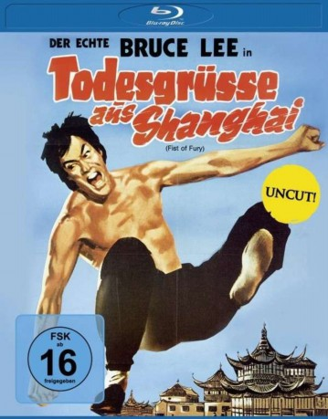
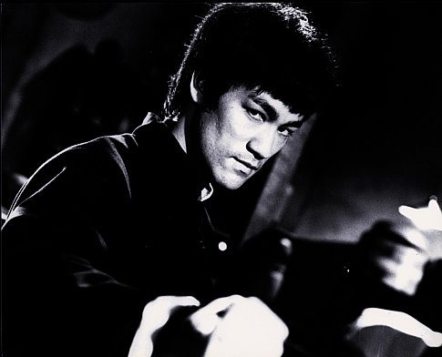
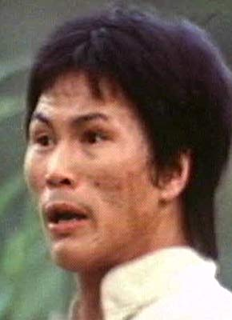

#2095 Bruce Lee 2 - Todesgrüße aus Shanghai
Alternativ: The Chinese Connection (Englischer Titel)
 
 IMDB-Wertung: 7.4 / 10
IMDB-Wertung: 7.4 / 10  Metascore: 0
Metascore: 0 
Returning to Shanghai to marry his fiancée, Chen Zhen (Bruce Lee) a student of renowned martial arts teacher Huo Yuanjia, discovers his sifu has died. During the funeral, members of a local Japanese dojo show up and insult the Chinese students. The bullying continues, with Chen fighting back, but when he discovers the truth - that his teacher was poisoned on the orders of the dojo's master - he sets off on a doomed mission of revenge.
Jahr: 1972
Dauer: 107 Minuten
FSK: 16
Land: Hong-Kong Studio: Cinerama Filmgesellschaft MBHTonspuren:
Untertitel:
Auflösung: 1080p (1920x816) Größe: 7065 MB
Genre: Action, Thriller, Drama, Liebe
Regisseur: Wei Lo
Drehbuch: Wei Lo
Soundtrack: Joseph Koo
Darsteller:
-  Bruce Lee als Chen Zhen
- Nora Miao als Yuan Le-erh
 Jackie Chan als Jing Wu student , uncredited
Jackie Chan als Jing Wu student , uncredited Wah Yuen als Man who mocks Chen at the gate , uncredited
Wah Yuen als Man who mocks Chen at the gate , uncredited James Tien als Fan Chun-hsia
James Tien als Fan Chun-hsia- Maria Yi als Yen
 Robert Baker als Petrov
Robert Baker als Petrov- Fu Ching Chen als Chao
- Shan Chin als Tung
- Ying-Chieh Han als Feng Kwai-sher
- Riki Hashimoto als Hiroshi Suzuki
- Jun Katsumura als Suzuki's bodyguard
- Chung-Hsin Huang als Tien
- Kun Li als Hsu
 Feng Tien als Fan
Feng Tien als Fan- Ying-Chi Li als Li
- Tony Liu als Chin
- Wei Lo als Inspector
- Yi Feng als Yoshida
- Ping Ou Wei als Interpreter Wu
-  Billy Chan als Japanese fighter
- Tom Chan als
 Hsi Chang als Wake eulogist
Hsi Chang als Wake eulogist Chuan Chen als
Chuan Chen als  Ching-Ying Lam als Japanese fighter
Ching-Ying Lam als Japanese fighter- Alexander Grand als Gate Guard , uncredited
- Barry Haigh als Fan Chun-hsia , uncredited
- Chris Hilton als Feng Kwai-sher , uncredited
 Kwok Choi Hon als Dojo student , uncredited
Kwok Choi Hon als Dojo student , uncredited- Hsing Chung Hung als Dojo student , uncredited
- Jim James als Extra , uncredited
- Michael Kaye als Chen Zhen / Interpreter Wu , uncredited
 Mars als (uncredited
Mars als (uncredited- Hidy Ochiai als Japanese fighter , uncredited
- Ted Thomas als Tien , uncredited
- Chien-Po Tsen als (uncredited
- Little Unicorn als Jing Wu student , uncredited
- Ming-Tsai Wu als Dojo student , uncredited
 Biao Yuen als Extra , uncredited
Biao Yuen als Extra , uncredited Corey Yuen als Japanese fighter , uncredited
Corey Yuen als Japanese fighter , uncredited
Datei: X:\HD-Eastern-Collections\Bruce Lee\Bruce Lee 2 - Todesgrüße aus Shanghai (1972, FSK16, 1920x816).mkv seit 02.10.2015
Festplatte: HD Eastern+Western
 Es gibt insgesamt 12 Filme in der Gruppe 'HD-Eastern-Collections\Bruce Lee'
Es gibt insgesamt 12 Filme in der Gruppe 'HD-Eastern-Collections\Bruce Lee'